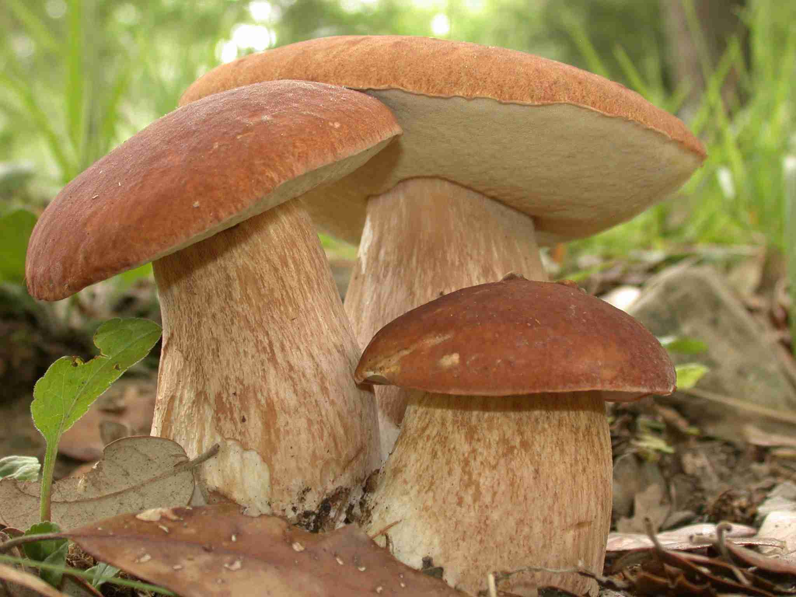
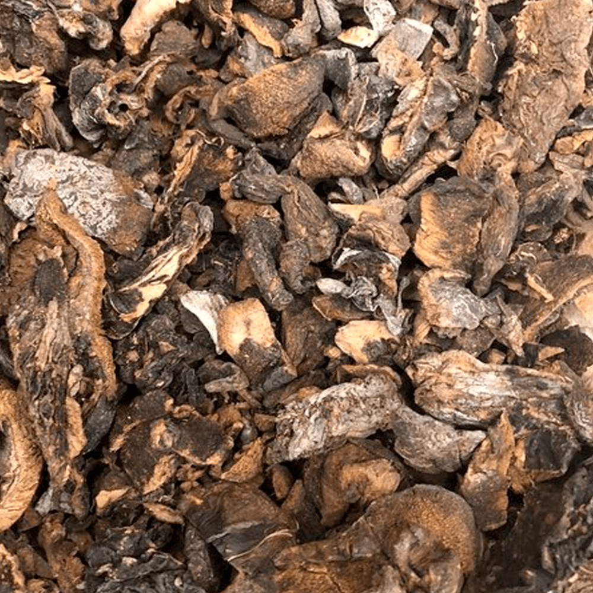
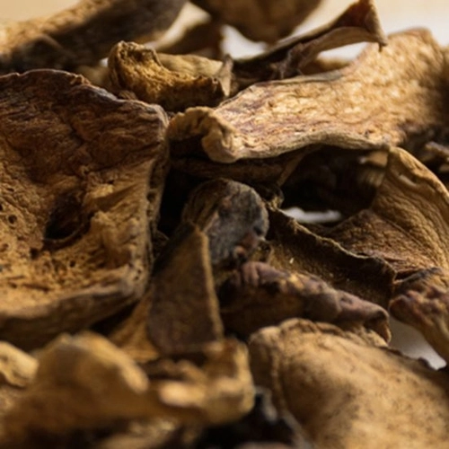
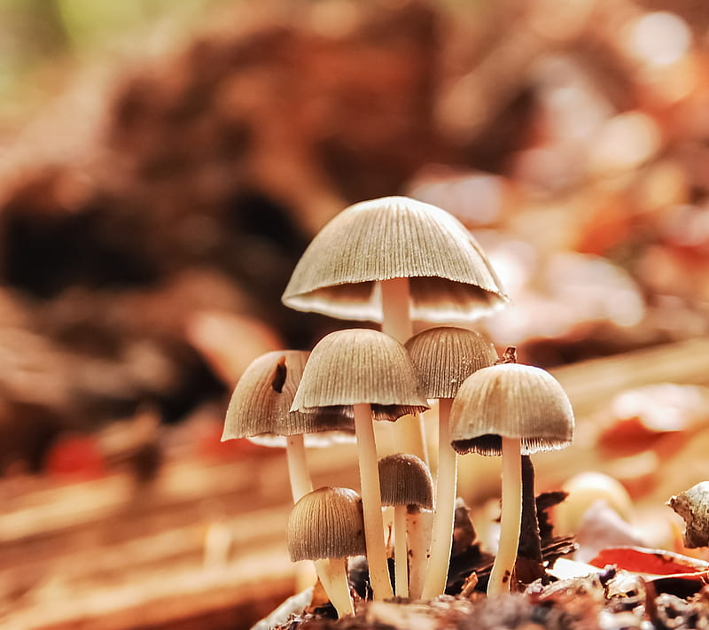
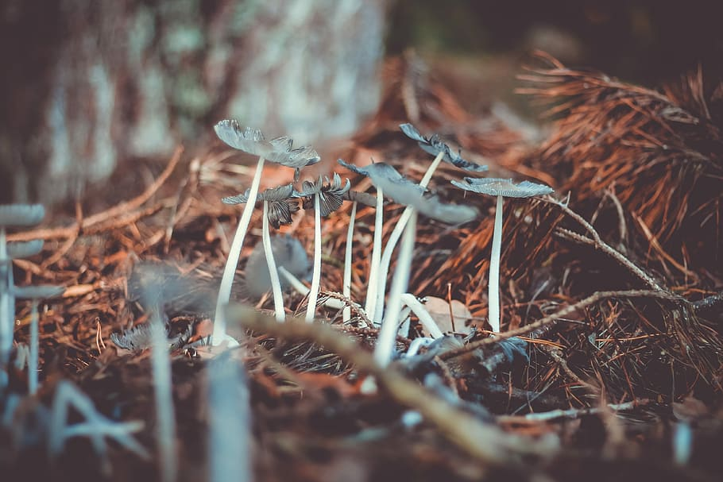

Funghi


Como características gerais entre os fungos, os cogumelos são organismos heterótrofos, ou seja, dependem de outros seres vivos para a nutrição. O modo como obtém nutrientes acontece quando liberam enzimas no ambiente, que degradarão a matéria orgânica e também inorgânica para posterior absorção através da parede celular das hifas. Quando decompõem restos de matéria orgânica são referidos como sapróbios e quando degradam restos de material vegetal são saprófitos. A grande produção e variedade de substâncias permitem que os cogumelos se desenvolvam em ambientes onde a degradação é complexa, como tronco de árvores e até mesmo solos contaminados.
Ele se desenvolve mais facilmente no continente europeu e na América do Norte, em arbustos que produzem frutos da estação do verão ao período outonal; este cogumelo é encontrado com maior frequência nas temporadas chuvosas. Os menos maduros são os mais usados – os mais amadurecidos podem pesar até 1 kg.

O funghi, particularmente o secchi, mais utilizado na gastronomia, é uma espécie de cogumelo da espécie Porcini ou Boletus edulis; o consumidor os encontra no formato desidratado, ou seja, desprovido de água. Eles são amplamente utilizados pelos ‘chefs de cuisine’ na confecção de molhos para massas e de pratos à base de carne. Normalmente este ingrediente confere um gosto peculiar a estas receitas. Há uma grande demanda por este cogumelo no continente europeu. Seu barrete mede de 7 a 30 centímetros e o caule alcança de 8 a 25 cm, e até 7 cm de diâmetro. O funghi deve ser bem higienizado antes do preparo, e assim é mais apropriado que ele fique de molho em água gelada durante 30 minutos
Eles possuem pouco carboidrato e são ricos em proteínas, além de terem baixo índice calórico. Estes fungos comestíveis também fornecem vitamina C, que fortalece o sistema imunológico, são ricos em vitamina D, que combate a anemia e são uma excelente fonte de minerais como potássio, fósforo e magnési

